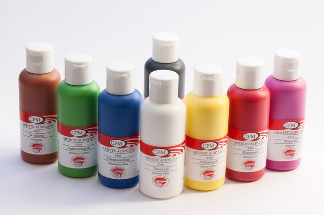

Bükk
Az akrilfesték teljesen fedő, gyorsan száradó, száradás után vízálló, vizes alapú dekorációs festék. Használható a művészet, hobbi, szabadidő, iskola, modellkészítés területein. Sok alaphoz alkalmazható, például fa, papír, bőr, kő, fém, üveg, agyag, viasz, műanyag felületekre.
Jellemzői
| Tuljadonság | Érték |
|---|---|
| Neve | Pentart akrilfesték |
| Gyártó | Pentart |
| Mennyiség | 50 ml |
| Egység ár | 510 Ft |